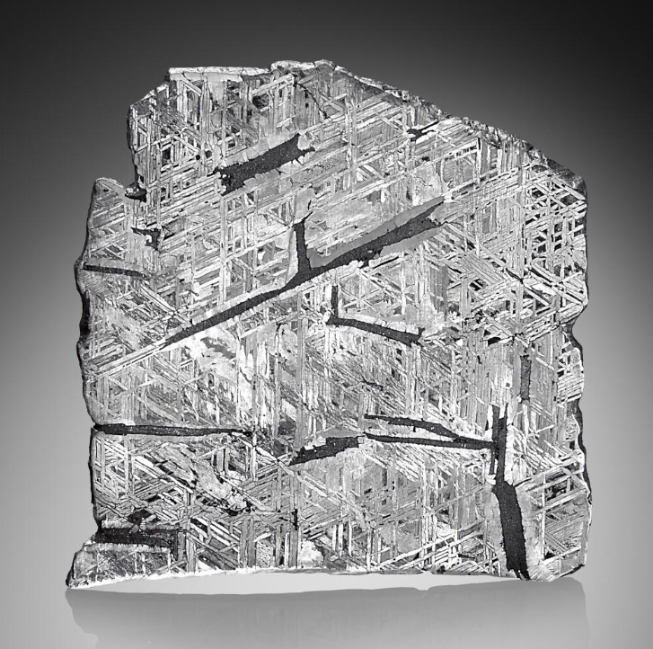

Iron · IIIE-an
Thiên thạch sắt nhóm IIIE bất thường (anomalous). Phân loại khuyến nghị trong cơ sở dữ liệu hiện hành.
An anomalous member of the IIIE iron group. This is the recommended classification in the current database.
Aletai là tên chính thức của một nhóm các khối thiên thạch sắt có liên hệ với nhau, được tìm thấy tại Tân Cương, Trung Quốc. Hồ sơ này giới thiệu lịch sử phát hiện, phân loại và cấu trúc kim loại của chúng.
Aletai is the official name for a group of related iron meteorite masses found in Xinjiang, China. This dossier explores their discovery history, classification and metallic structure.
74 t là tổng khối lượng ghi nhận của nhiều khối, không phải một mẫu đơn lẻ.
74 t is the recorded mass across multiple masses, not one single specimen.
.jpg)
Aletai không nên được hiểu là một khối đá duy nhất. Theo Meteoritical Bulletin, các khối sắt được phân tích và ghép cặp với khối Armanty; tên Aletai được dùng chính thức cho nhóm vật liệu có liên hệ này.
Aletai should not be understood as one single rock. The Meteoritical Bulletin describes iron masses chemically and petrographically paired with the Armanty iron; Aletai is the official name used for this related material.
Nguồn: Meteoritical Bulletin Database. Cơ sở dữ liệu ghi “Observed fall: No”; 1898 là năm tìm thấy, không phải ngày quan sát thiên thạch rơi.
Source: Meteoritical Bulletin Database. The entry states “Observed fall: No”; 1898 is the year found, not an observed fall date.
Lịch sử Aletai là quá trình nhận diện các khối thiên thạch ở nhiều địa điểm và thống nhất chúng dưới một tên chính thức.
Aletai’s history involves identifying related meteorite masses at different localities and bringing them under one official name.
Năm tìm thấy được ghi trong cơ sở dữ liệu cho thiên thạch Aletai.
Recorded year found for the Aletai meteorite in the database.
Tên Aletai được phê duyệt chính thức; các tên Armanty, Ulasitai, Xinjiang (b) và Xinjiang 008 được xử lý như tên đồng nghĩa theo lịch sử danh pháp.
The name Aletai was approved; Armanty, Ulasitai, Xinjiang (b) and Xinjiang 008 were treated as historical synonyms under the nomenclature decision.
Bài viết “Nomenclature of the Aletai (IIIE-an) iron meteorites from Xinjiang, China” công bố việc ghép cặp dựa trên phân tích hóa học và thạch học.
“ Nomenclature of the Aletai (IIIE-an) iron meteorites from Xinjiang, China” documented pairing based on chemical and petrographic analyses.
Khối lượng ghi nhận được cập nhật lên 74 tấn trong cơ sở dữ liệu.
The recorded mass was revised to 74 tonnes in the database.

Các khối Aletai được ghi nhận tại nhiều địa điểm trong khu vực. Tọa độ dưới đây là tọa độ khuyến nghị của vị trí phát hiện khối Armanty trong hồ sơ Meteoritical Bulletin, không phải tâm của toàn bộ vùng phân tán.
Aletai masses have been recorded at multiple localities in the region. The coordinate below is the recommended location for the Armanty mass in the Meteoritical Bulletin entry, not the centre of the entire strewn field.
Vị trí tham chiếu trong hồ sơ chính thức. Các khối Aletai tạo thành một dải phân bố Tây Bắc – Đông Nam dài khoảng 425 km theo bài công bố MB 105.
Reference location in the official entry. The Aletai masses form a northwest–southeast array spanning approximately 425 km, according to MB 105.
Mở bản đồ lớn ↗Open full map ↗Bản đồ nền OpenStreetMap. Điểm đánh dấu là vị trí Armanty theo tọa độ được hiệu chỉnh trong hồ sơ, không phải vị trí của mọi khối Aletai.
OpenStreetMap base map. The marker is the corrected Armanty location in the database, not the location of every Aletai mass.
Aletai được phân loại là thiên thạch sắt IIIE-an. Hồ sơ mô tả các pha kim loại chính và một số pha phụ được xác định trong mẫu nghiên cứu.
Aletai is classified as an IIIE-an iron meteorite. Its entry describes major metallic phases and several accessory phases identified in studied material.
Thiên thạch sắt nhóm IIIE bất thường (anomalous). Phân loại khuyến nghị trong cơ sở dữ liệu hiện hành.
An anomalous member of the IIIE iron group. This is the recommended classification in the current database.
Kamacite và taenite là các pha hợp kim sắt–niken; plessite là tổ hợp vi cấu trúc gồm các pha này.
Kamacite and taenite are iron–nickel alloy phases; plessite is a microstructural intergrowth involving these phases.
Các pha phụ được hồ sơ mô tả gồm schreibersite, daubréelite, troilite và haxonite.
Accessory phases reported in the entry include schreibersite, daubréelite, troilite and haxonite.
Trong nhiều thiên thạch sắt, cấu trúc hợp kim phản ánh quá trình nguội rất chậm bên trong thiên thể mẹ. Khi được cắt, mài và ăn mòn thích hợp, sự khác biệt giữa các pha có thể hiện ra thành hoa văn Widmanstätten.
In many iron meteorites, alloy textures record extremely slow cooling inside a parent body. Cutting, polishing and etching can reveal contrasts between phases as a Widmanstätten pattern.
Hoa văn đan xen đặc trưng có thể quan sát trên bề mặt một số thiên thạch sắt sau khi cắt, mài bóng và xử lý ăn mòn. Hình bên dưới là ảnh một mẫu thiên thạch sắt khác, dùng để minh họa hiện tượng, không phải ảnh Aletai.
The characteristic intergrowth can be seen on some iron meteorites after cutting, polishing and etching. The image below shows a different iron meteorite specimen to illustrate the phenomenon; it is not an Aletai photograph.

Ảnh minh họa cấu trúc Widmanstätten trên một thiên thạch sắt khác; định danh mẫu trong nguồn ảnh không chắc chắn. Tác giả Ra'ike · CC BY-SA 3.0.
Illustrative Widmanstätten structure on another iron meteorite; the specimen identification in the image source is uncertain. Author Ra'ike · CC BY-SA 3.0.
Khi hợp kim sắt–niken trong thiên thể mẹ nguội cực kỳ chậm, các dải kamacite phát triển trong nền taenite giàu niken. Tốc độ nguội rất thấp trong thời gian địa chất giúp các cấu trúc tinh thể phát triển đủ lớn để có thể quan sát sau xử lý bề mặt.
As iron–nickel alloy cools extremely slowly inside a parent body, kamacite lamellae develop within nickel-rich taenite. The very low cooling rate over geological time allows crystals to grow large enough to become visible after surface treatment.
Hình vi cấu trúc trong sơ đồ phía trên chỉ mang tính khái niệm, không mô tả tỷ lệ hay hướng tinh thể thực tế của một mẫu Aletai cụ thể.
The schematic microstructure above is conceptual; it does not show the actual scale or crystallographic orientation of a specific Aletai specimen.
Aletai là ví dụ cho cách các nhà khoa học kết hợp địa hóa, thạch học và dữ liệu phát hiện để nhận diện những khối thiên thạch có cùng nguồn gốc.
Aletai illustrates how scientists combine geochemistry, petrography and find records to identify meteorite masses that share a common origin.
Hợp kim sắt–niken và cấu trúc tinh thể cung cấp bằng chứng để nghiên cứu quá trình phân dị và nguội đi bên trong các thiên thể nhỏ.
Iron–nickel alloys and crystal textures provide evidence for differentiation and cooling inside small planetary bodies.
Phân tích hóa học và thạch học giúp xác định các khối tìm thấy ở nhiều địa điểm có quan hệ với nhau, từ đó thống nhất tên gọi khoa học.
Chemical and petrographic analyses can establish relationships among masses found at different localities, supporting consistent scientific nomenclature.
Các dữ liệu định danh, năm tìm thấy, khối lượng và phân loại được ưu tiên lấy từ Meteoritical Society. Hình ảnh có chú thích tác giả và giấy phép tại vị trí sử dụng.
Name, year found, mass and classification data are primarily taken from the Meteoritical Society. Images are credited and licensed at their point of use.
Hồ sơ chính thức: năm tìm thấy, khối lượng, phân loại, tọa độ và ghi chú lịch sử.
Official entry: year found, mass, classification, coordinates and historical notes.
Công bố về ghép cặp các khối Aletai dựa trên phân tích hóa học và thạch học.
Publication on pairing Aletai masses based on chemical and petrographic analyses.
Wikimedia Commons · CC BY-SA 4.0 · License
Wikimedia Commons · CC BY-SA 3.0 · License. Different specimen; identification uncertain.
Giải thích thành phần hợp kim sắt–niken và cấu trúc Widmanstätten.
Explanation of iron–nickel alloys and the Widmanstätten structure.
Bản đồ nền và dữ liệu địa lý hiển thị trong trang.
Base map and geographic data embedded in this page.
Ghi chú biên tập: Nội dung phục vụ giáo dục và trưng bày. “Năm tìm thấy” không đồng nghĩa với ngày rơi được quan sát. Ảnh minh họa cấu trúc Widmanstätten không phải mẫu Aletai. Bản đồ đánh dấu vị trí Armanty, không đại diện toàn bộ vùng phân tán.
Editorial note: This page is for education and exhibition. “Year found” is not an observed fall date. The Widmanstätten image is not an Aletai specimen. The map marks the Armanty location, not the entire strewn field.